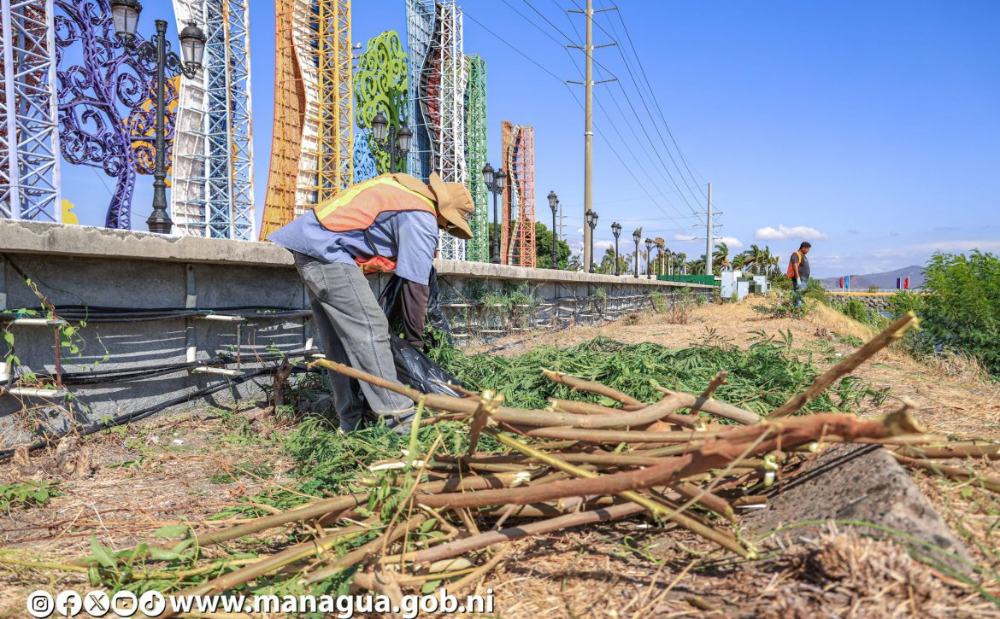
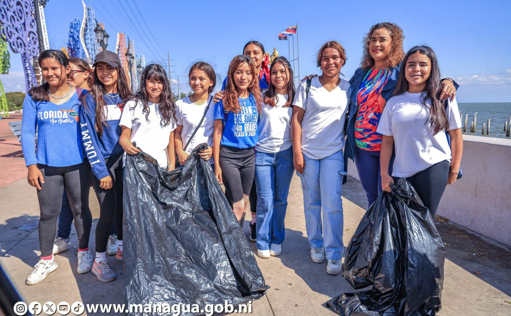
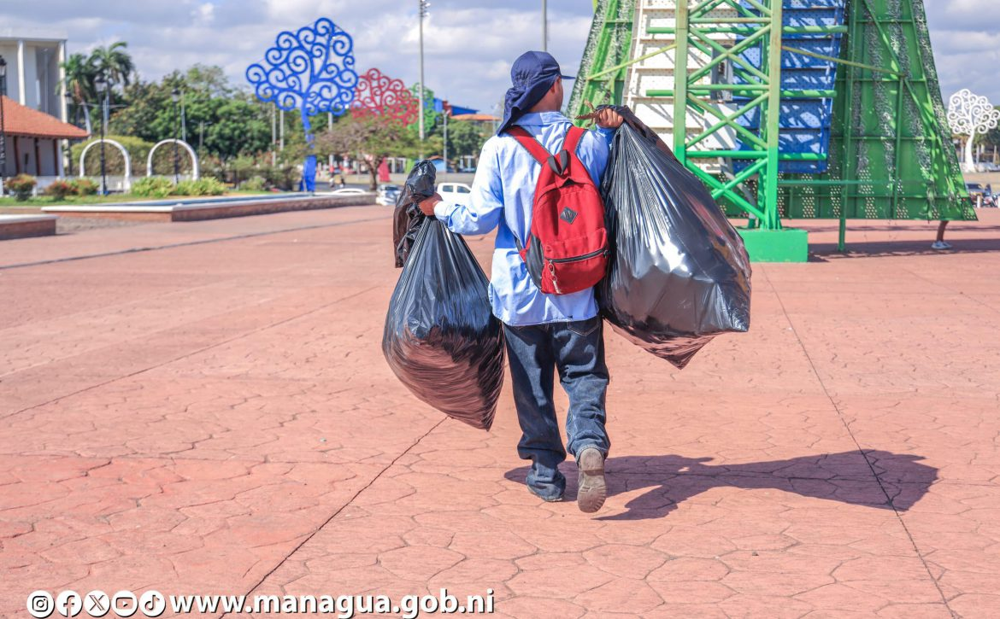

Jornadas de Limpieza
Voluntarios recolectan desechos en las zonas costeras del lago cada mes, retirando basura plástica y orgánica, lo que ayuda a mantener el agua más limpia y reducir el impacto en la fauna.
Voluntarios recolectan desechos en las zonas costeras del lago cada mes, retirando basura plástica y orgánica, lo que ayuda a mantener el agua más limpia y reducir el impacto en la fauna.
Se realizan charlas en escuelas y comunidades para concienciar sobre la importancia del cuidado del agua, la reducción de residuos y prácticas sostenibles que protejan el lago.
Se plantan árboles en las orillas y alrededores del lago para proteger el suelo de la erosión, mejorar la calidad del aire y recuperar el oxígeno, fortaleciendo el ecosistema local.


